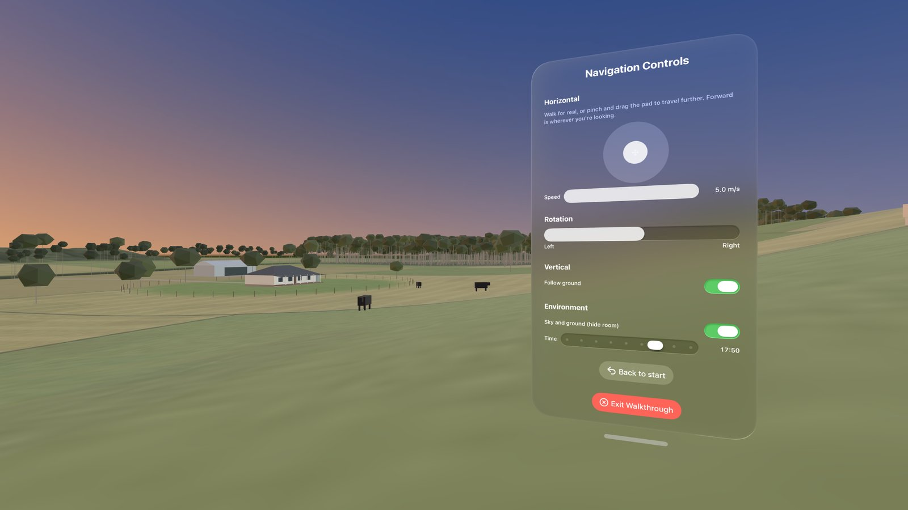
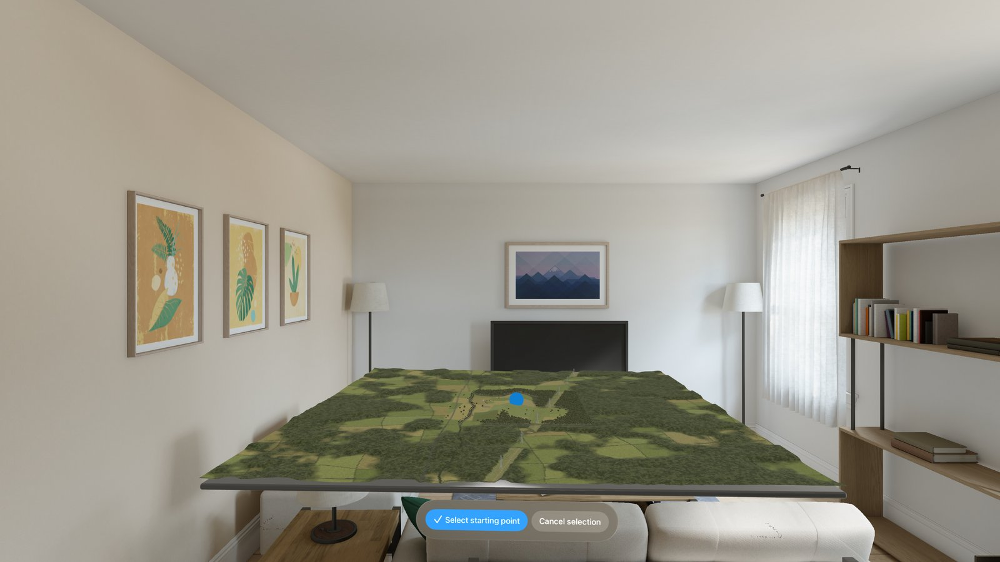

Model Walkthrough opens a USDZ model and places it around you at full size. Choose where you want to start, then walk through the model for real or glide through it with the on-screen controls.

Getting started
- Choose a model. The app opens with a sample model. Tap Replace default model with your .usdz to open your own file from the Files app or iCloud Drive.
- Select a starting point. The model appears on a 1 m × 1 m plate. Look at the blue dot, pinch, and drag it across the model. When it's where you want to stand, tap Select starting point.
- Walk through the model. Tap Walk Through Model. You start standing on the spot you chose, with your floor matched to the ground in the model.
- Exit. Tap Exit Walkthrough on the Navigation Controls panel to return to your room.

Moving around
- Walk normally to move short distances.
- Pinch and drag the pad to travel further. Forward is wherever you're looking. The Speed slider sets how fast you travel.
- Rotation: hold the slider left or right of centre to turn. The further from centre, the faster you turn. Let go to stop.
- Follow ground keeps your floor matched to the ground in the model as you move, so you go up and down slopes and steps.
- Sky and ground (hide room) replaces your room with an outdoor environment. The Time slider changes the time of day.
- Back to start returns you to your starting point.
Common questions
Which files can I open?
USDZ files, the 3D format used across Apple devices. Many 3D tools can export USDZ, and Reality Converter on the Mac can convert other formats such as OBJ, glTF and FBX.
My model is far too big or too small.
Some files are saved with the wrong units, for example centimetres stored as metres. Use the Scale slider in step 1 to correct the size. The panel shows the model's width, height and depth so you can check it.
The model loads slowly.
Large or very detailed models take longer, because the app maps the model's surfaces so you can stand on them. Simplifying the model in your 3D tool, or reducing texture sizes, will speed it up.
I can't see the control panel during the walkthrough.
It may be hidden behind part of the model. Press and hold the Digital Crown to bring your windows back in front of you.
Does the app upload my models anywhere?
No. Your models stay on your device. See the Privacy Policy.
Contact
Found a problem, or have an idea for the app? Email me and I'll get back to you.
ModelWalkthrough@icloud.comPlease mention your visionOS version and, if possible, describe the model you were using.